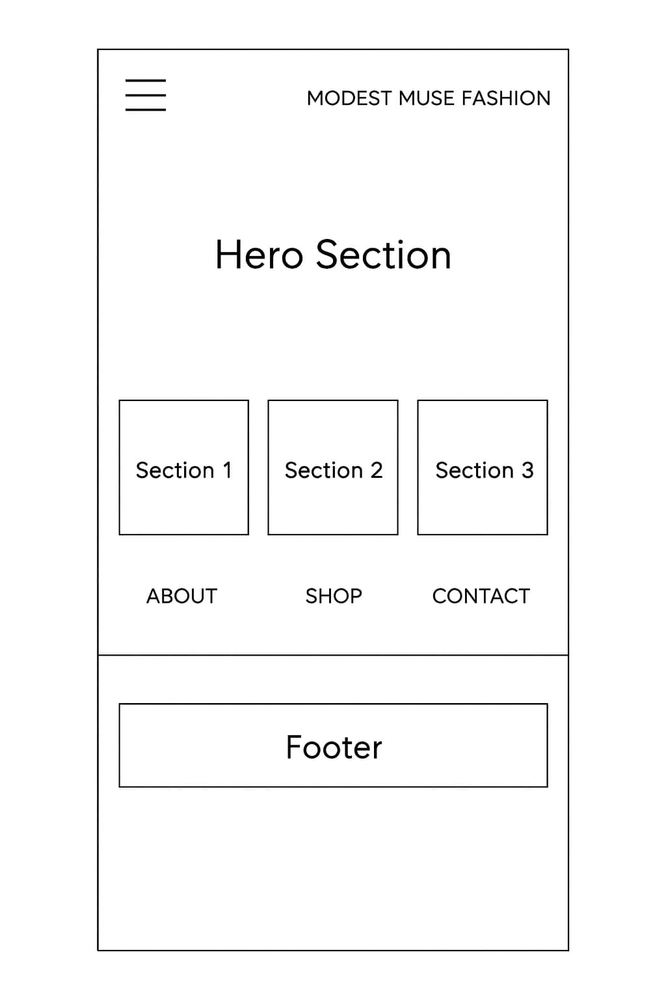
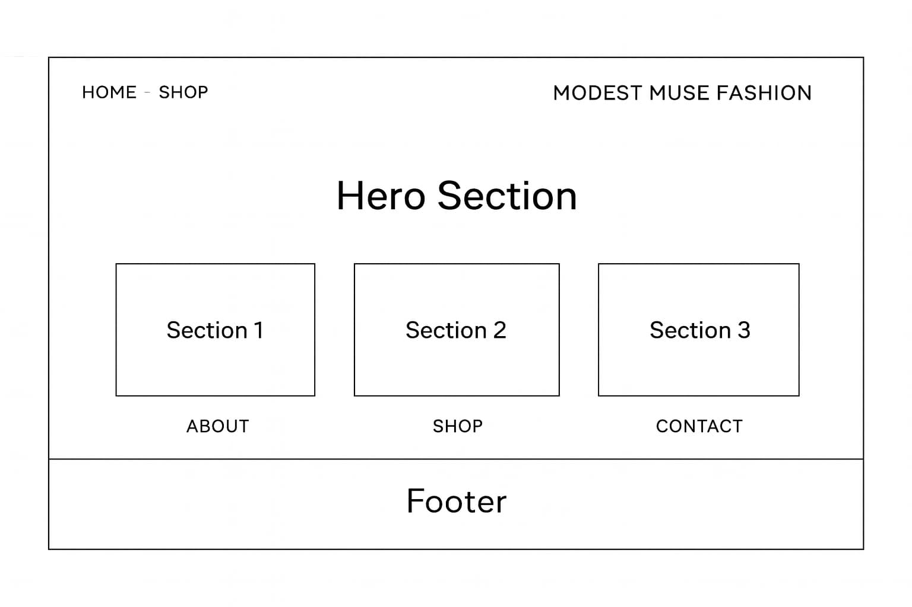

A clothing site dedicated to modest-inspired fashion pieces.
Modest Muse Fashion
This name reflects the essence of the brand—fashion that is stylish, modern, and modest. “Muse” implies inspiration, aligning with the goal of providing thoughtfully curated clothing collections for those who value elegant yet conservative styles.
Optional domain availability: modestmusefashion.com
The site serves as a curated destination for modest fashion lovers. It helps users discover fashion options that blend comfort, coverage, and contemporary style.
Learning Outcome Alignment: This project will implement valid HTML and CSS, follow accessibility best practices, and include interactive elements for an optimized user experience.
Blush Pink – #E7C6C2
Used for accents, header backgrounds, and visual highlights.
Deep Charcoal – #2F2F2F
Used for headings, titles, and important text for contrast.
These colors were chosen for a soft, refined palette that complements a modest fashion aesthetic.
Using only two fonts ensures consistency and simplicity throughout the site.
Simple layout idea for smaller screens.

Layout idea for wider screens.
